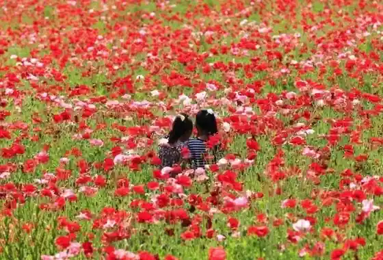
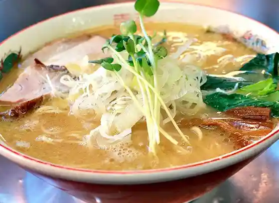
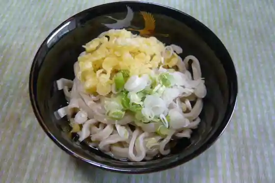

Roadside Station Kitsuregawa
Sakurashi, Tochigi · 028-686-8180 · Official / source link
Kitsuregawa Popii Hatake
Sakurashi, Tochigi · 028-686-3013 · Official / source link

Ramen Senmonten Takesue Main Shop
Sakurashi, Tochigi · 028-686-2085 · Official / source link

Sebunhandoreddo Club Futtogorufukosu
Sakurashi, Tochigi · 028-686-0700 · Official / source link
Ujiie Udon
Sakurashi, Tochigi · 028-682-2019 · Official / source link

Ujiie Yuyu Park
Sakurashi, Tochigi · 028-681-1120 · Official / source link
Sasaya Bettei
Sakurashi, Tochigi · Official / source link
Higashi Wa Tera
Sakurashi, Tochigi · 028-685-3836 · Official / source link
Kame no I Hotel Kitsuregawa
Sakurashi, Tochigi · 028-686-2822 · Official / source link
Sen Kin
Sakurashi, Tochigi · 028-681-0011 · Official / source link
Kitsuregawa Onsen
Sakurashi, Tochigi · 028-686-6627 · Official / source link
Roadside Station Kitsuregawa Ayu Koya
Sakurashi, Tochigi · 028-686-5159 · Official / source link
Oto Campground Taiyo no Oka
Sakurashi, Tochigi · 028-686-6177 · Official / source link
Furusato Kiko Uekawa Ko Mise
Sakurashi, Tochigi · 028-686-2810 · Official / source link
Motoyu Onsen (Sakurashi Ei Dai 1 Onsen Bath)
Sakurashi, Tochigi · 028-686-3284 · Official / source link
Kitsuregawa Saotome Onsen
Sakurashi, Tochigi · 028-686-4126 · Official / source link
O Maruyama Hotel (Kitsuregawa Onsen)
Sakurashi, Tochigi · 028-686-6688 · Official / source link
Rotemburo (Kitsuregawa Onsen)
Sakurashi, Tochigi · 028-686-5047 · Official / source link
Sebunhandoreddo Club
Sakurashi, Tochigi · 028-686-0700 · Official / source link
Murasaki Tsuka Gorufu Kurabu
Sakurashi, Tochigi · 028-686-3011 · Official / source link
Yaki Imo Marugoto Hoshi Imo Kan Kiwami
Sakurashi, Tochigi · 028-623-1513 · Official / source link
Ayutsu Sho
Sakurashi, Tochigi · 028-686-5159 · Official / source link
In
Sakurashi, Tochigi · 028-686-2172 · Official / source link
HAYAKIKAZE CAFE
Sakurashi, Tochigi · 028-666-8233 · Official / source link
Atorie · Juriarozu (Jamu Workshop & Kafe)
Sakurashi, Tochigi · 028-686-0630 · Official / source link
Ayu Sushi
Sakurashi, Tochigi · 028-686-3225 · Official / source link
O Maruyama Park (Okuragasaki Joshi)
Sakurashi, Tochigi · Official / source link
Kitsuregawadango
Sakurashi, Tochigi · 028-686-2008 · Official / source link
Sakurashi Kanko Boranteiagaido
Sakurashi, Tochigi · 028-666-8370 · Official / source link
Sakurashi Tenkei Jo
Sakurashi, Tochigi · 028-686-3631 · Official / source link
Kabayama Nishiki
Sakurashi, Tochigi · 028-686-2008 · Official / source link
Kanchiku Kakoi no Ie (Oshu Kaido - Kitsuregawa Yado Shuhen)
Sakurashi, Tochigi · Official / source link
Kitsuregawa Ayu
Sakurashi, Tochigi · 028-686-2008 · Official / source link
Kitsuregawa Onsen Nasu
Sakurashi, Tochigi · 028-686-3270 · Official / source link
Kitsuregawa Kyuryo San Sugi no Isu · Sugi, Hinoki no Teburu
Sakurashi, Tochigi · 028-685-3841 · Official / source link
Kitsuregawa Shrine
Sakurashi, Tochigi · 028-686-5001 · Official / source link
Goyo Hori
Sakurashi, Tochigi · Official / source link
Ryuko In
Sakurashi, Tochigi · 028-686-7017 · Official / source link
Ohinata Kantorii Kurabu
Sakurashi, Tochigi · 028-686-2561 · Official / source link
JA Shio no Ya Ka no Kohata Nosambutsu Chokubai Tokoro
Sakurashi, Tochigi · 028-686-2268 · Official / source link
Beruserubakantorii Club
Sakurashi, Tochigi · 028-685-1511 · Official / source link
Kitsuregawa Kantorii Kurabu
Sakurashi, Tochigi · 028-685-3900 · Official / source link
Kitsuregawa Famirii Campground
Sakurashi, Tochigi · Official / source link
Kitsuregawa Kyuryo Village Sugi Interia Mokko Kan
Sakurashi, Tochigi · 028-685-3841 · Official / source link
Koto Chokubai Tokoro
Sakurashi, Tochigi · 028-686-5423 · Official / source link
Na Tsu Ha Kan
Sakurashi, Tochigi · 028-681-1022 · Official / source link
JA Shio no Ya Sakurashi Chokubai Tokoro
Sakurashi, Tochigi · 028-682-0090 · Official / source link
Takizawa Ie House
Sakurashi, Tochigi · 028-682-7123 · Official / source link
e Plaza San Ban Kan
Sakurashi, Tochigi · 028-686-6627 · Official / source link
Garasuato Workshop Assemburu
Sakurashi, Tochigi · 028-681-1806 · Official / source link
Sakurashi Museum - Arai Kanpo Memorial Museum
Sakurashi, Tochigi · 028-682-7123 · Official / source link
Komyo Tera
Sakurashi, Tochigi · 028-682-8743 · Official / source link
Tochigi San Kyo Gatsu no Ichigo Daifuku
Sakurashi, Tochigi · 028-682-2270 · Official / source link
Roadside Station Kitsuregawa Purojiekushonmappingu
Sakurashi, Tochigi · 028-686-8180 · Official / source link
Imamiya Shrine (Oshu Kaido - Ujiie Yado Shuhen)
Sakurashi, Tochigi · 028-682-2685 · Official / source link
Juerii Workshop Atoriesoeta
Sakurashi, Tochigi · 028-682-7899 · Official / source link
Emi no Nature Sho
Sakurashi, Tochigi · 028-686-2881 · Official / source link
Okura no Sho Abura Tsuke
Sakurashi, Tochigi · 028-681-2776 · Official / source link
Kantan Ayu Meshi no Moto
Sakurashi, Tochigi · 028-686-5159 · Official / source link
Sakurashi Gurasu
Sakurashi, Tochigi · 028-681-1806 · Official / source link
Sakurashi Terasu (Ekimae Johokan Tenjikan)
Sakurashi, Tochigi · 028-680-5533 · Official / source link
Sakurashi Bu Land
Sakurashi, Tochigi · 028-686-6627 · Official / source link
Sakurashi San Buruberiijamu
Sakurashi, Tochigi · 028-686-0630 · Official / source link
Sakurashi General Park / Shimin Puru
Sakurashi, Tochigi · 028-682-8888 · Official / source link
Chokoreto Kore no Hanaya
Sakurashi, Tochigi · 028-666-7166 · Official / source link
Musubi no Kane
Sakurashi, Tochigi · 028-686-6627 · Official / source link
Reimboaisu
Sakurashi, Tochigi · 028-666-5745 · Official / source link
Rentasaikuru
Sakurashi, Tochigi · 028-666-8370 · Official / source link
Oshu Kaido
Sakurashi, Tochigi · 028-686-6627 · Official / source link
Onsen Pan
Sakurashi, Tochigi · 028-686-1858 · Official / source link
Kanko Boranteia no Kai
Sakurashi, Tochigi · 028-666-8370 · Official / source link
Kitsuregawa Sando
Sakurashi, Tochigi · 028-666-8233 · Official / source link
O Kashi Tokoro Kyo Gatsu
Sakurashi, Tochigi · 028-682-2270 · Official / source link
Ezure Shoten (Reimboaisu, Kurepu)
Sakurashi, Tochigi · 028-666-5745 · Official / source link
Kamiya Kashi Mise
Sakurashi, Tochigi · 028-686-2008 · Official / source link
Suihen Park (Joifuruburu Park)
Sakurashi, Tochigi · 028-681-1120 · Official / source link
Nama Choko Wa Sake
Sakurashi, Tochigi · 028-666-7166 · Official / source link
Nishi Do Tera
Sakurashi, Tochigi · 028-682-2693 · Official / source link
Sennen Tera
Sakurashi, Tochigi · 028-686-2253 · Official / source link
Saotome no Sakura Namiki
Sakurashi, Tochigi · 028-686-6627 · Official / source link
Sumibi Yaki Ayu no Kanro Ni
Sakurashi, Tochigi · 028-686-5159 · Official / source link
Tenjitsu Hoshi Ayu no Hiraki
Sakurashi, Tochigi · 028-686-5159 · Official / source link
Tokusen Komochi Ayu Kanro Ni
Sakurashi, Tochigi · 028-686-3225 · Official / source link
Wa I Hanashi I Plaza
Sakurashi, Tochigi · 028-666-8370 · Official / source link
Hotel Shimizu So
Sakurashi, Tochigi · 028-682-1122 · Official / source link
Hotel Beruseruba
Sakurashi, Tochigi · 028-685-1511 · Official / source link
Matsushima Onsen Otome Baths
Sakurashi, Tochigi · 028-682-2266 · Official / source link
Roadside Station Kitsuregawa Onsen (Higaeri Onsen)
Sakurashi, Tochigi · 028-686-8181 · Official / source link